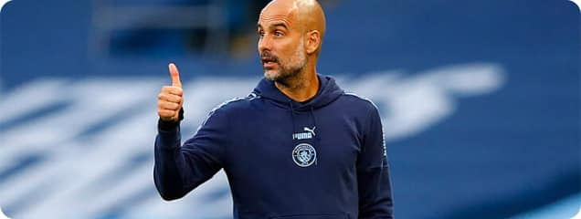

Футбол. Испания. Эль классико. Барселона - Реал Мадрид
Благодаря победе в CAS рассуждения больше не имеют смысла. Гораздо важнее, зачем «Сити» в принципе решил потратить 300 миллионов фунтов. В эту сумму входит и потенциальный доход с продаж игроков (например, 40,5 миллионов за Лероя Сане), но столько за трансферное окно клуб все равно не тратил за всю эпоху шейхов. Сопоставимо (285 миллионов фунтов) – только летом-2017, когда Гвардиола устроил тотальную перестройку состава.